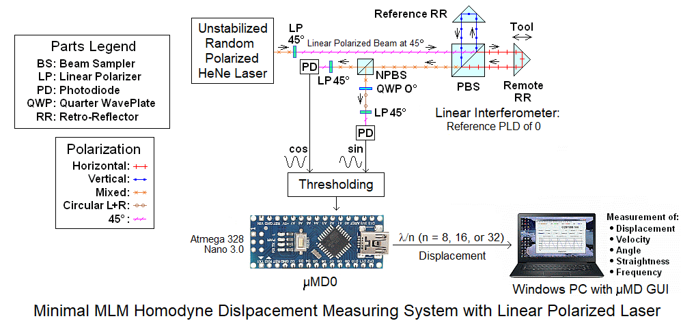
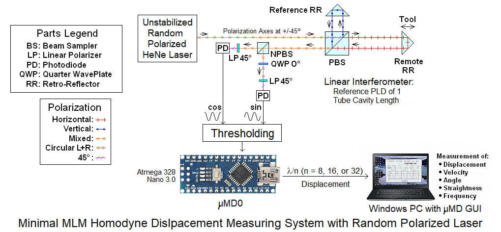
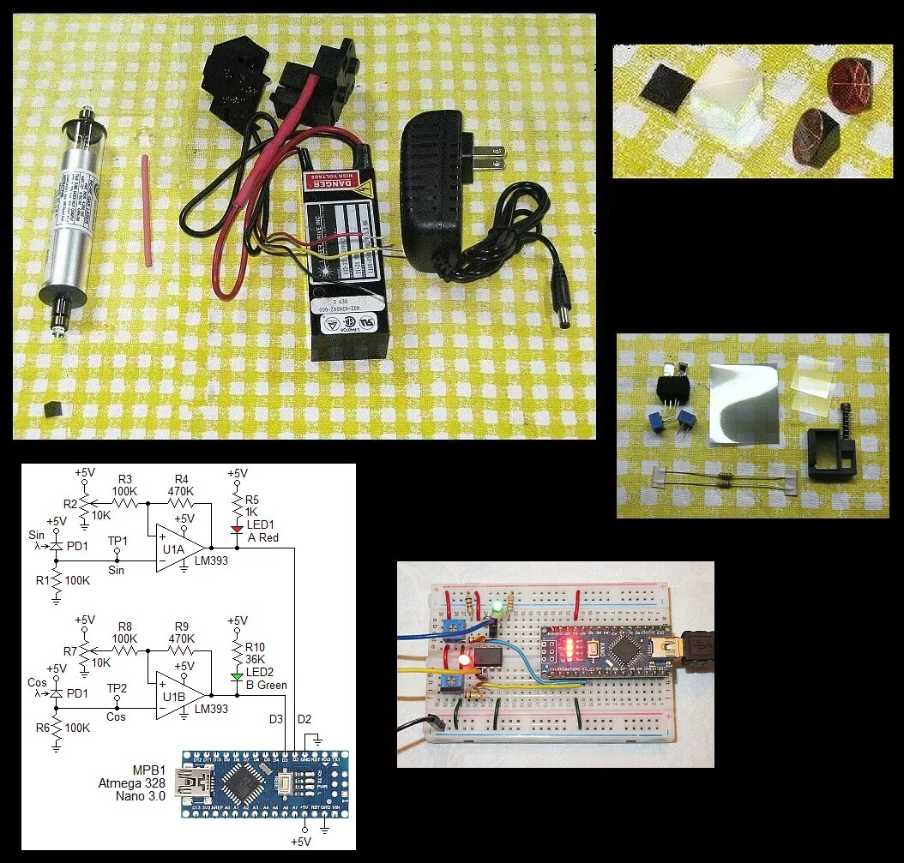

This document contains guidelines for the construction of an interferometer displacement measuring system based on a bare HeNe laser tube and a measurement readout based on a microcontroller. The specific version is about the simplest one possible with a Multi-Longitudinal Mode (MLM) laser without stabilization. This still supports a path length variation of an inch or more and enables the principles of displacement measuring systems based on interferometry to be demonstrated. Parts can be added after the basic system has been constructed to stabilize the laser tube which virtually eliminates the path length limitations. Of the low cost kits, this is the most easily upgradeable.
The general organization of two examples of the minimal homodyne displacement measuring systems that can be constructed from these kits are shown below:


These only differ in how the polarization of the laser is set up and the optimal zero reference Path Length Difference (PLD).
The systems have three major parts:
In more detail:
WARNING: Most of these tubes have anode-end output. Do not touch anode-end when powered or for awhile after to avoid shocking experience! More on this below.
The mounting brackets are convenient for, uh, mounting the tube but do not need to be used if some other scheme is preferred. But the red ballast resistor must be retained.
These subsystems can be constructed and tested separately. Although not a specific option, an upgrade to a higher performance setup will be available.
The typical parts are shown below:

Although not shown, bare PCBs for the Quad Decoder and µMD0 will probably be included. This is simple enough that they do not need to be used, at least for initial testing. However, anything more permanent would benefit greatly in terms of reliability and aesthetics. ;-)
Setting up and powering the laser tube:
For use in an interferometer, stable mounting of all components is critical.
To power the laser tube proceed as follows:
Please go to: Wiring Instructions for Laser Drive 103-23 HeNe Laser Power Supply.
The top diagram showing anode-end output is probably the one relevant here.
As noted there are two beams from the tube. The main beam is the stronger one than the "waste" beam (typically by a factor of 25-100 or more). Which end of the tube is which is set at the time of manufacture. For the tube in the kit, it will need to be determined as both types have been shipped. The output beam emerges from the end with the AR coating, which appears blue-ish in reflection. However, it may be the anode-end or cathode-end. Also as noted, the tube MUST be oriented so the glass-end is wired to the positive (red wire with ballast) of the HeNe laser power supply or else bad things will likely happen.
There may be a variable attenuator plate in the anode-end mounting bracket. Since reducing the power of these tubes is silly, that should be removed and has probably already been done. At least one is included in the kit packed separately. These can be used as beam-splitters or beam samplers - more below.
Carefully install the tube within the brackets with the clamps almost flush against the end-bells so that they do not press on the mirror stems. No more than a fraction of a mm of lateral movement possible. The entire assembly should be securely attached to the mounting surface but make sure not to stress the tube in the process, especially the glass-metal seals. If the clamps seem loose, they should be tightened slightly by bending the leaf spring(s) or stuffing some foam in the gap in the plastic clamp.
Apply power. The tube should light almost immediately and a beam similar in intensity to that of a wimpy laser pointer should be produced. If no beam is visible or only a very weak beam, shut down and determine why. The tube may be installed incorrectly.
CAUTION: DO NOT stare into the beam or its specular reflection with your remaining good eye. A 1 mW laser is similar in intensity to that of the noonday Sun. If your original equipment eyeballs are ruined, replacement parts are not currently available at affordable prices.
Beam Characteristics
The output of the HeNe laser tube is single spatial mode TEM00 which means it has a nearly perfect Gaussian profile - a single round spot whose intensity falls off smoothly. This is better than for many other types of lasers without a lot of work.
The tubes provided in this kit may have a wide divergence - 8 milliRadians (8 mR) meaning the beam expands at a rate of 8 parts per thousand. So at 1 meter (1,000 mm), the beam (to 1/e points in intensity) will be just over 8 mm in diameter. The beam can be better collimated to reduce this expansion - or focused to a small spot - using one or two lenses. A single 3-4 inch focal length lens can be used to collimate the beam. A bare lens like this is probably included - look in the Optics bag. The effective point source of the beam from the high divergence tubes is a bit less than 2 inches behind the output mirror. Thus, a 2 inch focal length lens just beyond the output will collimate the beam with a narrow diameter. A 4 inch focal length lens can be positioned to diverge faster, collimate, or focus to a point. A pair of lenses can be used to expand the beam by the ratio of their focal lengths. The larger the diameter, the smaller the possible divergence. Surplus Shed has a semi-infinite selection of inexpensive lenses including many suitable for beam expanders. HP/Agilent beam expanders are available at modest cost to produce a 3-4 mm beam. Ask. There are also 2X-8X fully adjustable beam expanders available on eBay and elsewhere. For tubes with a fairly well collimated beam, a beam expander will still be desirable where the total path length is more than a foot or so.
Longitudinal Modes and Polarization
A short tube like this operates with 1 or 2 longitudinal modes which are generally orthogonally polarized. As the tube heats and expands, the modes move through the neon gain curve as depicted in HeNe Laser Mode Sweep: 140 mm (~5.5 inch) Cavity Length Animation. To view these from the real laser requires a Scanning Fabry-Perot Interferometer (SFPI, also called a "Laser Spectrum Analyzer"). (I have SFPI kits available for 1/10th to 1/50th of commercial versions.) Inserting a polarizing filter in the beam will enable the polarization behavior to be observed. Some tubes will be smooth and continuous as in the animation. Others will be "flippers" where the polarization of the individual modes may switch as some point during the mode sweep (though adjacent modes will still be orthogonally polarized). The typical mode sweep for a similar length well behaved tube is shown below.
This is a plot of the longitudinal mode intensity with the red and blue being the intensity of the orthogonal polarized components. A plot like this can be produced using a polarizing beam splitter, a pair of photodiodes, and an inexpensive (<$60) data acquisition system.
Determining the polarization axes of the laser tube:
This will require the laser tube being mounted so it can be rotated and powered.
A piece of Linear Polarizer (LP) or Circular Polarizer (CP) sheet, or polarizing beam splitter can be used. A CP consists of a combination of an LP and Quarter WavePlate (QWP).

There is a piece of CP sheet included in the Quad Decoder bag. This has thin protective films on both sides. The side with the QWP is sticky. Lift a small bit at one corner to determine which one it is. Leave the film on the QWP side in place but fully remove it from the LP side. (The film cannot be left in place there because it messes with polarization and this needs to behave like an LP.) The LP axis is at a 45 degree angle relative to the edges of the LP sheet as shown above.
Place a white card a few inches beyond the output of the tube. Power it up and insert the CP sheet in the beam with the LP-side facing the tube and an edge parallel to the base. As the tube warms up and expands, mode sweep will result in the intensity on the card varying from dark to light. Orient the tube so that this variation is maximum - it should actually go to very close to 0. At that orientation, one polarization axis of the tube is at precisely 45 degrees; the other one is orthogonal to it. Mark that on the tube with a piece of tape or a Sharpie™.
Setting tube orientation and Path Length Difference (PLD):
Note: If using the mounting brackets and a plastic rib gets in the way of the tip-off (exhaust tube), try a different 90 degree orientation, or just cut away the offending plastic.
There are two ways of setting this up for use in the minimal DIY interferometer displacement measuring system:
This is the simplest but more than half the laser power gets thrown away. After determining the polarization axes of the tube, orient it so that they are at 0/90 degrees and install a Linear Polarizer (LP) at 45 degrees. This will produce a beam that is similar to that of a linear polarized tube. The 0 reference PLD should be set at 0.
Both of these have identical path lengths in each arm if the reflectors are at the same distance. Asymmetric arrangements like that of the more common Plane Mirror Interferometer (PMI) are a bit trickier to figure out: For the PMI the REF beam is single pass but the MEAS beam is double pass.
For the default optics in this kit, only the LI can be constructed. But the HSPMI is a low cost add-on.
Experimating with a PLD of 0 with this stup is definitely worth the effort. The results will be fascinating, but I don't think the Universe will explode. ;-) The behavior will be strange though.
And for any of these setups, feel free to try PLDs that are multiples of a fraction of the cavity length. ;-) Hint: Start with one that adds one cavity length to the PLD. ;-)
The end for now, more to come. ;-)